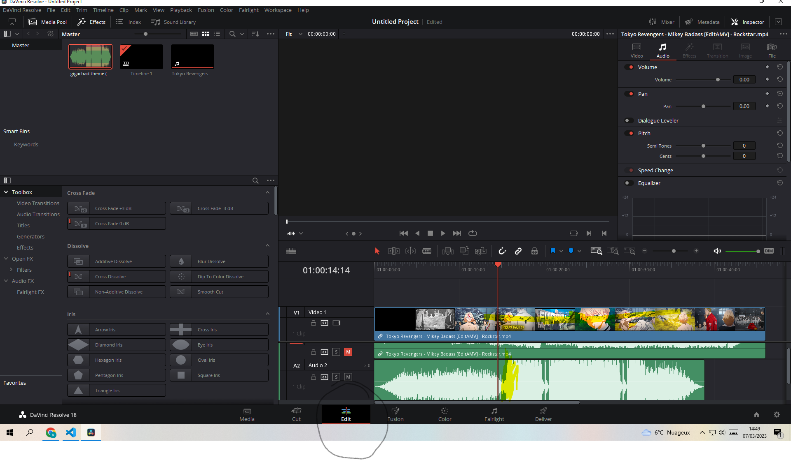
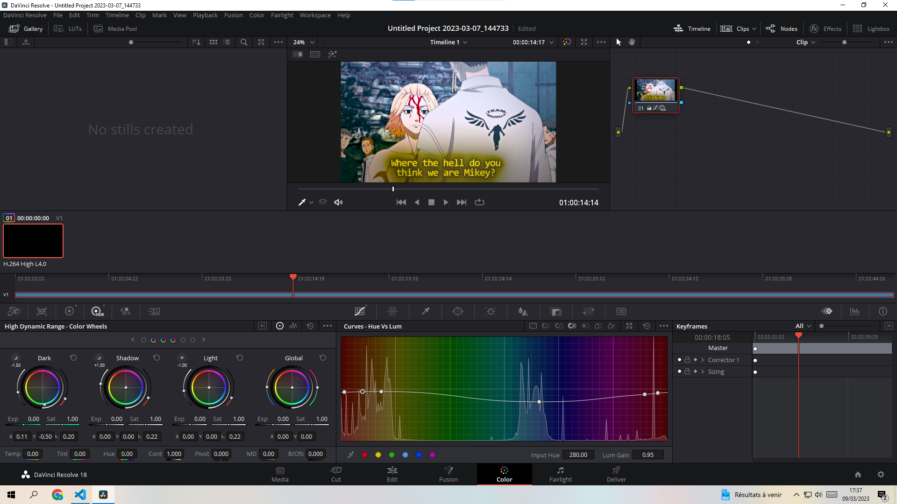
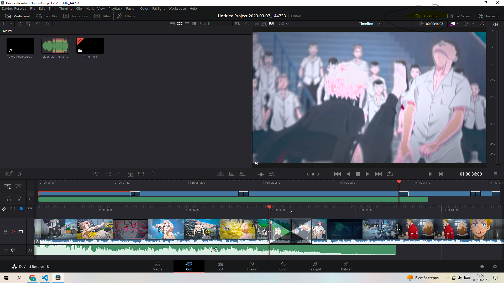
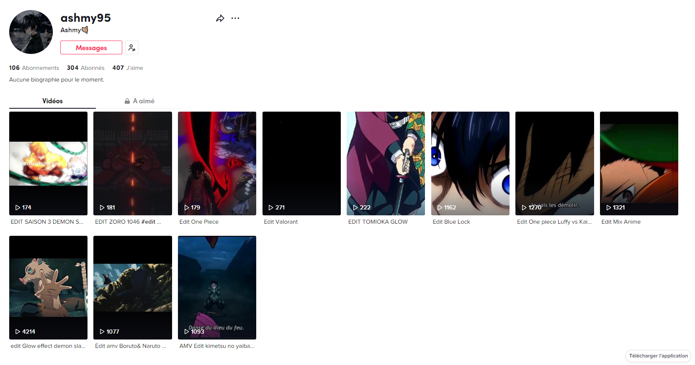
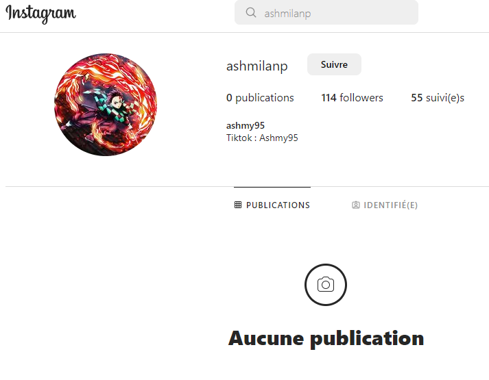

Dérushage et Montage des rushs

Donc sur l'image après avoir glisser mes rush j'ai appuyer clic droit sur la souris puis on split et sa cut le passage puis touche suppr pour enlever le passage
C'est comme sa le dérushage marche on trouve les bons moments et on fait une vidéo on essaye que les rush soivent cours,clair,efficace pour pas faire de vidéo trop longue qui serontt beaucoup moins attirante.
Puis avec les rush et l'imagination on monte la vidéo le mieux et de faire un decreschendo et creschendo vous mettez plein de bons moments au début pour attirer puis vous mettez les choses un peu moins intéressantes.
Accorder rythme son vidéo

Synchroniser le son vidéo est assez simple en soi. Il faut regarder les graudations au niveau du son et ou sa claque au eau un changement direct doit y avoir lieu donnant un magnifique moment et la le spectateur et content sa ne marche pas sur toute les vidéos mais vous pouvez aussi utiliser les blancs des musqiues pour mettre un effet sonore.
Changer les couleurs
La on va jouer avec les nuances de couleurs

Il faut mettre le point blanc sur d'autre style de couleur pour changer des nuances avec les cut réalisé de belles choses sont possibles il faut seulement la bonne immagination.
EFFETS,TRANSITIONS,PRESETS
La partie la plus importante pour les presets je vais pas réellement parlez dessus car c'est payant mais c'est des effets styliser propre a ajouter en effet sur le montage.

La c'est tout simple Il fait glisser les effets de la rubrique edit puis effet sur les trous des cuts pour animer les bons moments et vous terminez la vidéo a votre guise.
La v1 est terminez si cela répond a l'attente de la personne voulant le montage ou vous vous pouvez faire un export sois en rubrique sois export rapide de cut.

Si vous avez des questions, venez message sur Instagram.
Vous pouvez suivre mes montages sur mon tiktok (mon youtube est ban.😭😭😭 j'ai que mes montages récents donc.)
Retrouvez mes montages récents dans mon tiktok :

Me contactez sur Instagram si aide nécessaire :

SITE PRINCIPAL :
SITE PRINCIPAL:
Le Voir avec son
Montage Davinci Avec Son